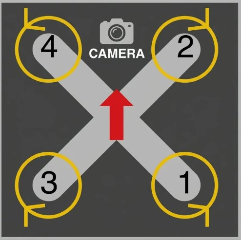

Крок 1: Заливання пресету Betaflight
CLI Engine
⏳ Очікування
1. Прошивка команд
2. Фінальне читання
3. Перевірка пресету
Крок 2: Автоматична настройка BLHeli_32
MSP 4-Way Interface
⏳ Очікування
🔗
1. Підключення
➜
⚡
2. Заливка
➜
🔍
3. Перевірка
➜
🎯
4. Статус OK
➜
🔒
5. Закриття
ESC #1: Очікування
ESC #2: Очікування
ESC #3: Очікування
ESC #4: Очікування
Крок 3: Перевірка та реверс моторів
DShot Passthrough
⏳ Очікування
Обов'язкова перевірка безпеки:
Перед запуском моторів обов'язково повністю зніміть усі пропелери з дрона!
M4
NORMAL
🔄

M2
NORMAL
🔄
M3
NORMAL
🔄
M1
NORMAL
🔄
📋 Панель логування (Logging Panel)
Serial Console
Очікування підключення пристрою...